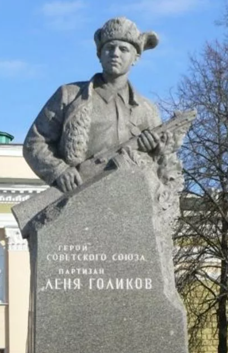
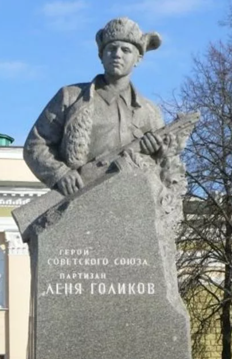

Имя героя
 

Леонид Александрович Голиков (известный как Лёня Голиков) — пионер-герой, участник Великой Отечественной войны, партизан, Герой Советского Союза (посмертно).
Ранняя жизнь
Леонид Александрович Голиков родился 17 июня 1926 года в деревне Лукино Новгородской области в семье рабочих.С раннего детства Голиков был приучен к труду. Он носил из колодца воду, ухаживал за коровой и овцами, умел поправить забор и залатать дырявые валенки.
Деятельность во время блокады
С марта 1942 года Голиков был разведчиком 67-го партизанского отряда 4-й Ленинградской партизанской бригады. Он проникал в фашистские гарнизоны, собирая данные о противнике.
Наследие
2 апреля 1944 года Леониду Александровичу Голикову было присвоено звание Героя Советского Союза посмертно.